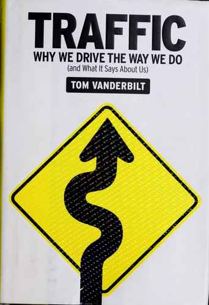

汤姆·范德比尔特（Tom Vanderbilt）是一位美国科学记者和作家，长期为《纽约时报》《连线》《史密森尼》等刊物撰稿，擅长将社会科学、工程学和心理学的研究成果转化为引人入胜的叙事。《开车经济学》（Traffic）于2008年由科诺夫出版社（Knopf）出版，以交通驾驶这一日常行为为切入点，深入探讨了人类行为、风险感知、决策偏差和城市规划等广泛议题。这本书并非一本关于交通工程的技术手册，而是一面镜子——通过观察人们在道路上的行为，揭示人类心理中那些在其他场景中同样起作用但不易被察觉的深层模式。
范德比尔特在书中呈现了大量违反直觉的研究发现。他探讨了为什么增加道路容量往往不能缓解拥堵（诱导需求效应），为什么圆形交叉路口比信号灯交叉路口更安全（因为它们迫使驾驶员降速并关注环境，而非依赖绿灯的"安全感"），为什么较窄的道路反而比宽阔的道路更安全（因为驾驶员在感到不安全时会自发降低速度）。他详细论述了"风险补偿"（Risk Compensation）理论：当安全措施增加时——比如安全带、防抱死制动系统——驾驶员往往会无意识地提高冒险行为，部分抵消甚至完全抵消安全技术带来的收益。这一现象远超交通领域：它解释了为什么更好的风险管理工具有时反而导致更大的风险承担，这一逻辑在金融市场中同样成立。
范德比尔特还深入探讨了人类在风险评估方面的系统性缺陷。人们对驾驶的恐惧远低于对飞行的恐惧，尽管统计数据清楚表明驾驶的死亡风险远高于飞行——这种错误判断源于人类对可控性的偏好和对概率的直觉性误解。他引用了大量认知心理学研究，展示了过度自信如何渗透到驾驶行为中：绝大多数驾驶员都认为自己的驾驶水平"高于平均"，这种系统性的自我评估偏差在投资领域同样无处不在。书中关于"注意力盲区"的讨论也极具启发性——驾驶员往往看到了他们期望看到的东西，而忽略了他们未曾预期的危险，这与投资者在研究中倾向于确认自己已有观点的"确认偏差"如出一辙。
查理·芒格（Charlie Munger）曾推荐这本书，这并不令人意外。芒格一贯主张从多个学科的视角审视问题，而《开车经济学》正是一本将心理学、经济学、工程学和行为科学融合在一起的跨学科佳作。对于投资者而言，这本书的价值不在于它讨论了交通，而在于它通过交通这个人人熟悉的场景，生动地展示了人类认知偏差如何在真实世界中导致系统性的错误判断。风险补偿、过度自信、注意力盲区、诱导需求——这些概念从道路延伸到市场，从方向盘后面延伸到投资决策的每一个环节。范德比尔特用一个看似日常的主题，写出了一本关于人类非理性行为的深刻之作。